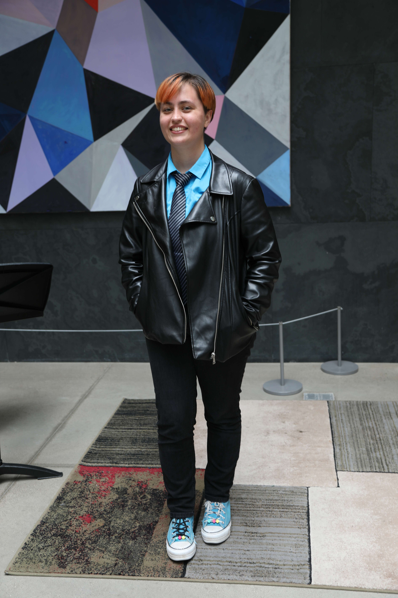

Hey, i'm Meenakshi!

Hey y'all! i'm Meenakshi McNamara (they/them), a first-year math grad student at Princeton.
Currently i'm still exploring what kinds of math i'll focus on for my PhD, but i have interests in algebraic geometry, topology, operator algebras, number theory, and mathematical physics (and probably more!). i'm really excited to have the chance to explore all of this though!
Besides math (and physics) related things, i love to read (pretty much anything, but especially scifi/ fantasy on my own), write and draw when i have time, and play games. i also like rock climbing and have recently tried a bit of swing too :)
Oh yeah, probably i should give a bit of background on me academically... my first professional goal was to become a paleontologist (from ages 3 through 13 ish), and i still really love dinosaurs (and learning about evolution in general. For example, whale evolution is pretty cool, and i also like general flora and fauna from the Mesozoic era including mammals, pterosaurs, and various marine reptiles). i entered college at Purdue with the plan to study physics, but added a math major to help out with theory, and was slowly pulled over to math. i really have a lot of important mentors to thank for supporting me and encouraging me to follow my passions, and in particular i want to give a shout out to Rolando de Santiago who has had an immeasurable impact on me (both career and life)! SO. Now i'm in math at Princeton, but i still am passionate about physics. in fact, i did a master's in theoretical physics at the Perimeter institute last year, which was an amazing experience (although i managed to turn my essay topic into almost being pure math lol). So anyways, i guess that's my "educational" background since starting college :)
Email: meenakshi [at] princeton [dot] edu
You can learn more about me in the other tabs (i'm only building the site rn tho, so some parts are probably a bit broken.). Also, thanks Kenta for letting me copy website things.